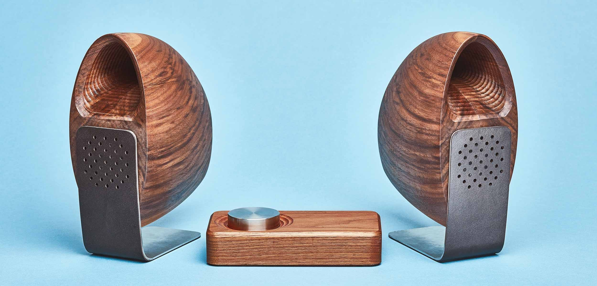
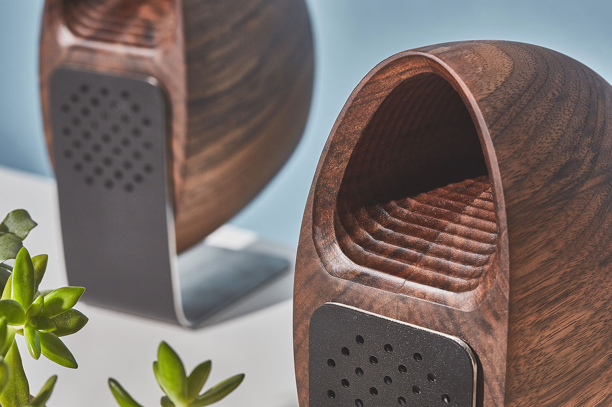
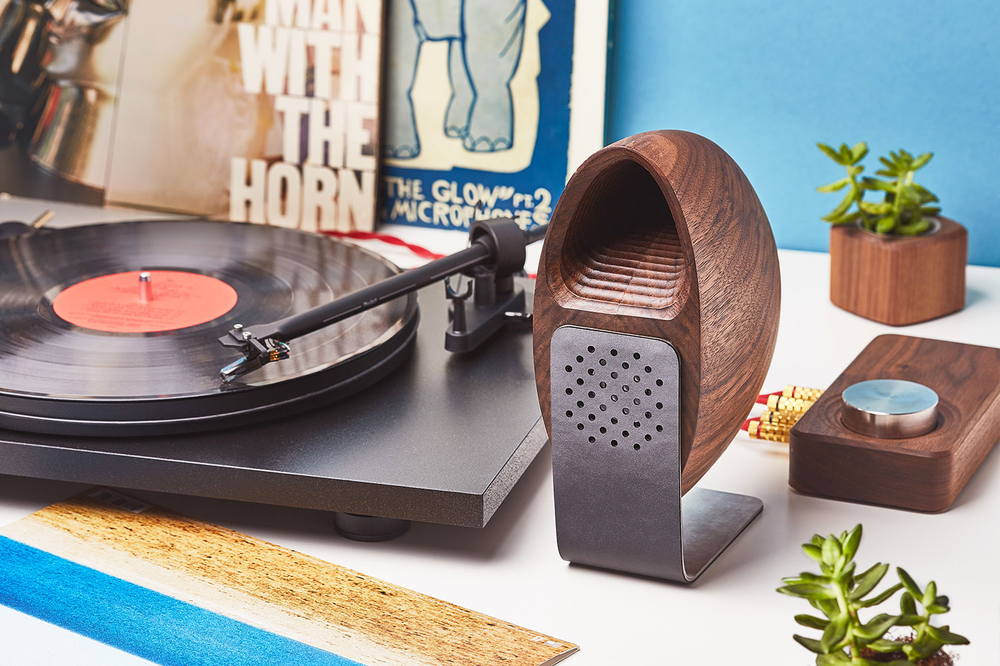
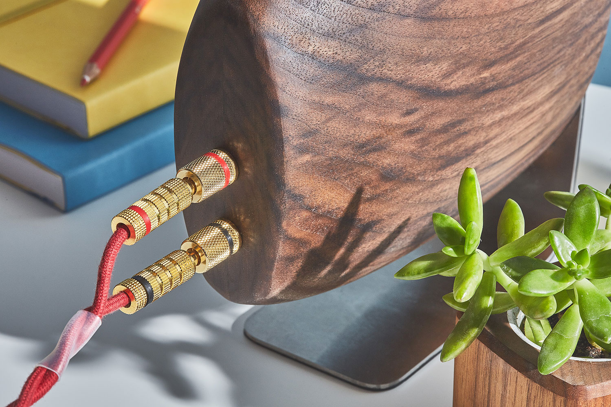
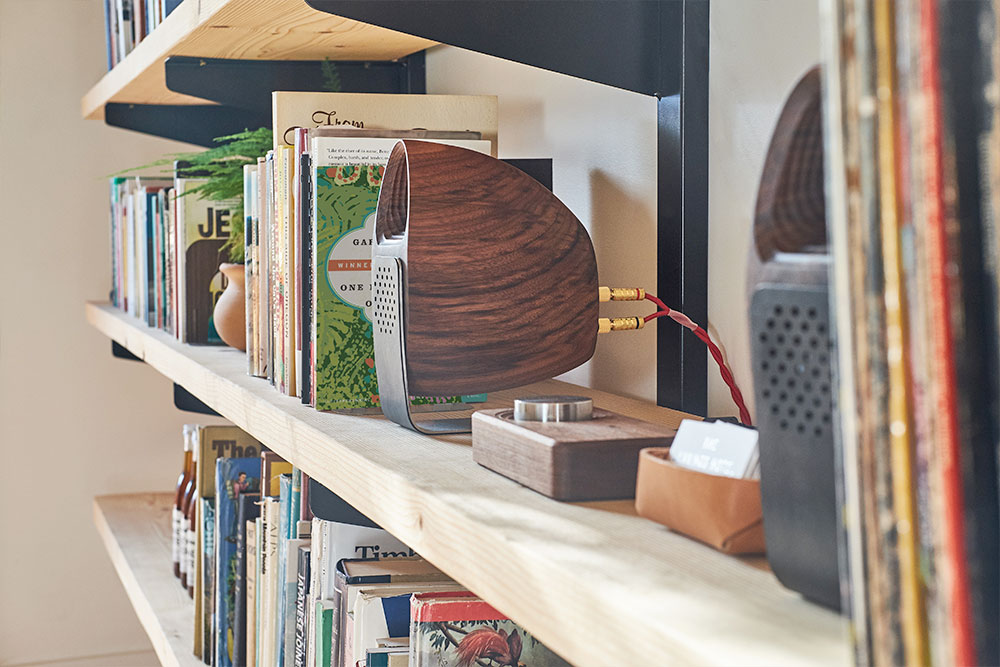

Wood Beats
Contact
Other products

Perfect wooden design
Thanks to the industrial designer Joey Roth speakers have superior acoustic properties of wood.
Creating super clear and precise sound.


Bringing up memories
You will be able to play your favourite vinyl records due to possibility of analog input.
Gather your family and celebrate good old days with Wood Beats.
Compatible
With seven different connectors you won't have to worry about playing your favourite music with Wood Beats.
Just plug in the cable and enjoy the sound.


Fits every home
It's wooden material and well-design allows Wood Beats to fit every shelf of your home.
Make your friends jealous.